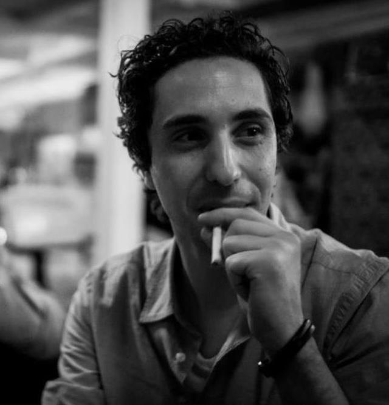
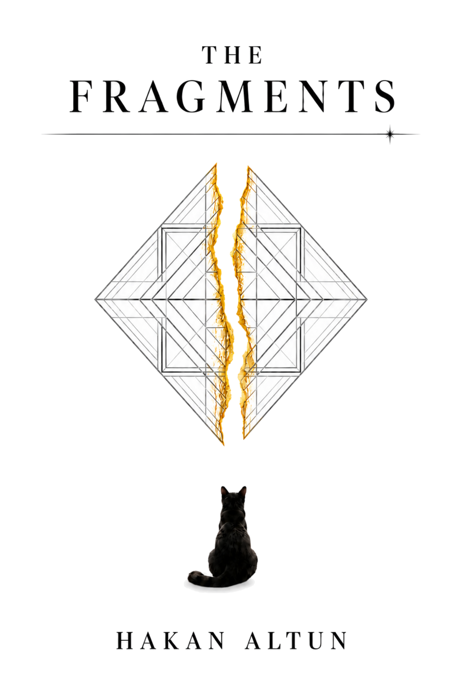

Writer and lecturer in Istanbul. Exploring philosophy, perception, and the corridors between what we say, what we see, what we perceive, and what we choose to forget.

A speculative philosophical work structured as a loop — from the Big Bang through a domestic Istanbul scene to a post-singularity future. A book about what remains when everything that can be forgotten has been.
That force you call gravity was actually the effort of separated pieces remembering they were once One.
Seven essays on what we build inside ourselves — and why.
Unified by a corridor metaphor and a movement from the external to the solitary.
Standalone pieces on psychology, language, and the things we carry without knowing.
The one who made it to the cover.
I teach at Yeditepe University in Istanbul and write philosophical personal essays in English for an international audience. My work circles around perception, forgiveness, beauty, and the quiet architectures of self-deception — the corridors we build without noticing the walls.
I was born into a city that insists on being looked at. Most of what I write is an attempt to look back.